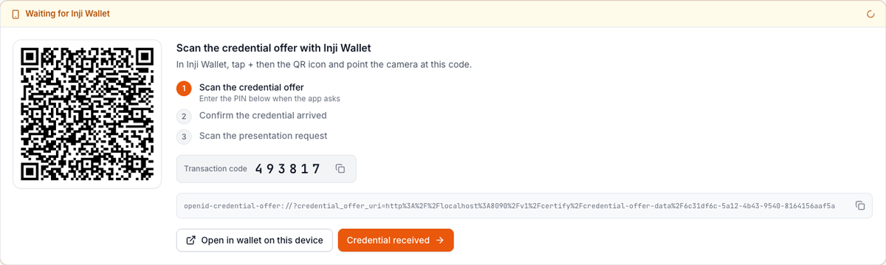
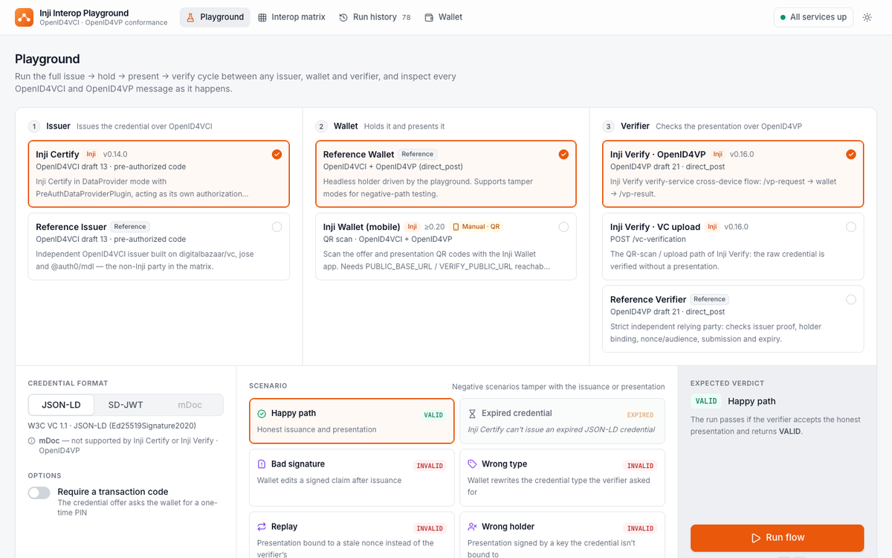
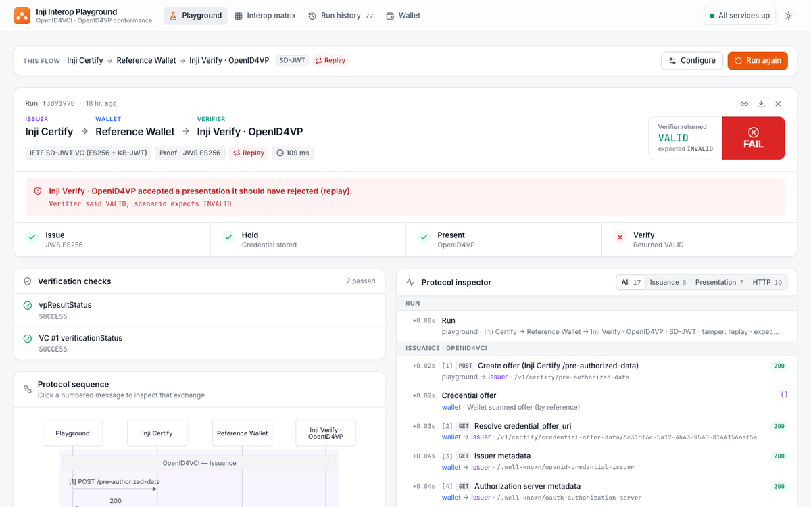
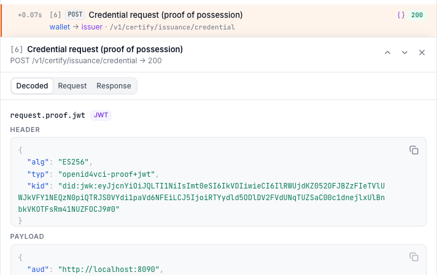
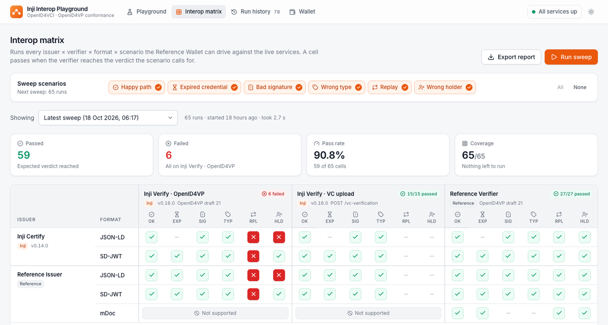
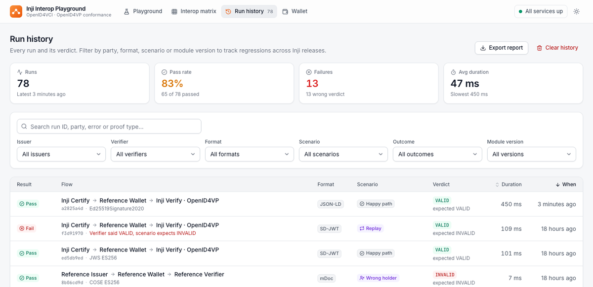
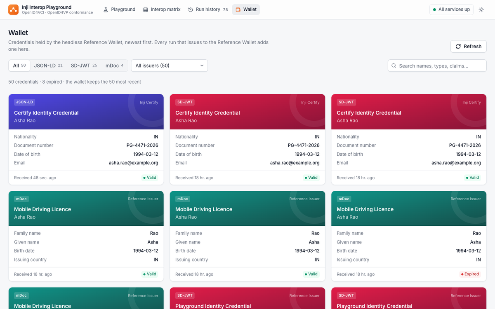
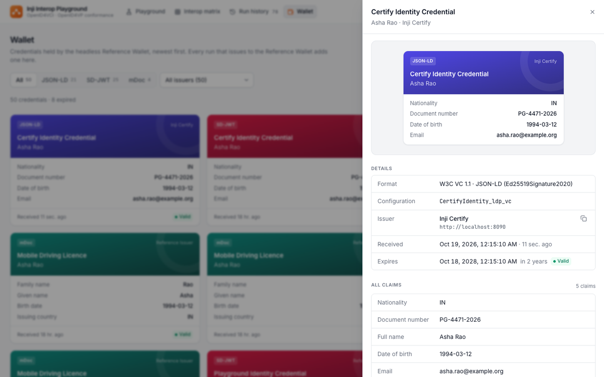

Four tabs. The Playground tab runs one flow and shows it live; the matrix and history open any earlier run in the same run view; the wallet lists what the Reference Wallet holds. Screens are from the running app.
Reference Wallet (default): the run goes straight through issue, hold, present and verify in about a second.
Inji Wallet (mobile): the run pauses and the run view shows QR codes for the phone (top row). Tamper scenarios need the Reference Wallet, since a real wallet will not forge a presentation.
Every run is saved and can be reopened from Run history or the Interop matrix.

The run waits at Issue. Scan the offer QR in Inji Wallet (enter the transaction code if asked), or use Open in wallet on this device.
The verifier's answer arrives like any other run: stages, verdict and inspector fill in.

Pick an issuer, a wallet and a verifier in the three columns, then a format (JSON-LD, SD-JWT, mDoc) and a scenario. The expected verdict is shown next to Run flow; combinations a party can't do are disabled, with the reason.

Stage tracker (Issue, Hold, Present, Verify), the verdict with the verifier's actual answer against the expected one, every verification check, a live sequence diagram and the protocol inspector.

Click a numbered arrow in the diagram or a row in the inspector. Decoded shows JWT header and payload, SD-JWT disclosures, KB-JWT, VP and presentation definition; Request (with copy as cURL) and Response show the raw exchange.

Export report downloads the markdown matrix.

Export report or Clear history (asks to confirm).

Credentials the Reference Wallet holds, newest first. Filter by format or issuer, search names and claims.

Detail sheet: the card, format, configuration, issuer, received and expiry dates with validity, and every claim.